Lecture 7: Memory-Efficient Neural Networks
Coverage and sourcing
This lesson follows the CS229S “Memory-Efficient Neural Networks” slide deck (Fall 2024 offering, Fall 2023 headers), taught by Azalia Mirhoseini, with MIT 6.5940 (TinyML, Prof. Song Han) as the stated inspiration. The deck’s arc runs: pruning (magnitude, iterative, structured vs unstructured, 2:4 sparsity), the number formats (integers, fixed point, FP32/FP16/BF16), k-means quantization, linear quantization, LLM-scale breakdown and fixes, and knowledge distillation. The lesson adds the post-deck history, each fact dated: SparseGPT and Wanda one-shot pruning (2023), the GPTQ/AWQ/SmoothQuant family, native FP8 training (DeepSeek-V3, December 2024), and NVFP4/MXFP4 on Blackwell (2025-2026, October 2026 updates throughout). The Fall 2024 calendar lists “Butterfly and Monarch matrices” under this lecture’s sparsity topics. The shipped deck does not contain them. They are marked [uncertain] below, never asserted.
The problem: the model does not fit
Lecture 5 taught reducing memory accesses. This lecture reduces the memory required. The difference matters on small devices. Microcontrollers have 3x less memory than mobile phones, and widely used vision models exceed the microcontroller memory limit by up to 100x for ResNet-50 (Lin, 2020). A model that cannot fit cannot run, no matter how clever the kernel.
The same wall moved up the stack. A 7B model in FP16 needs 14 GB for the weights alone: it fits on one good GPU. A 70B model needs 140 GB: it does not fit on one 80 GB GPU. A 671B model needs 1.3 TB: it does not fit on one server. Three classical methods shrink it: prune weights away, spend fewer bits per weight, or teach a small model what the big one knows.
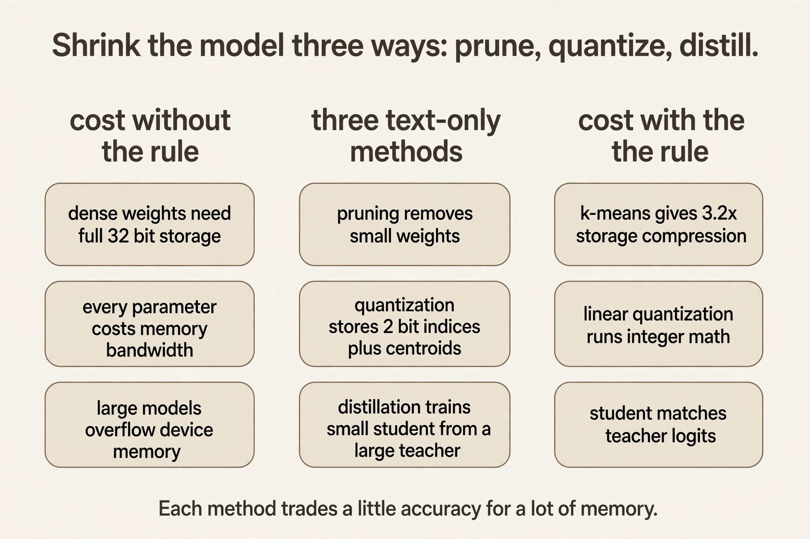
First method: pruning
Start from the weights. Pruning discards a subset of parameters after training. The result is a sparse network. Formally: given original weights W, find pruned weights Wp minimizing the loss L(x, Wp) subject to ||Wp||_0 < T, where ||.||_0 counts nonzeros and T is the target parameter count. An ideal pruning process accelerates training or inference on real hardware, retains accuracy, and generalizes across models.
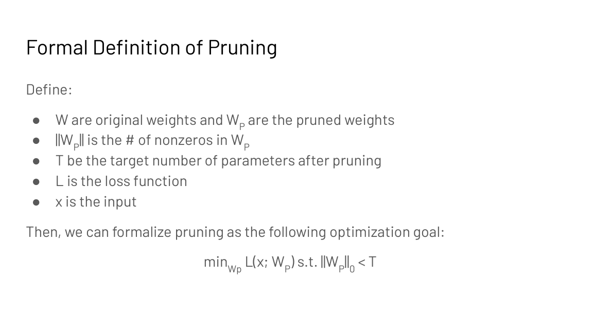
Watch the selection rule on a toy. Input X = [x1, x2, x3], weights W = [5, 0.3, -0.4], ReLU activation. The neuron computes Y = ReLU(5 x1 + 0.3 x2 - 0.4 x3). Magnitude pruning keeps weights with large absolute values: 5 stays, 0.3 and -0.4 go. Coarse-grained magnitude pruning works on rows: keep rows whose sums of absolute values are large. Regression-based pruning (He et al., 2017) is smarter: pick rows to minimize the layer-output reconstruction error ||Z - Zhat||_F^2 subject to a nonzero budget, then relearn the remaining weights. Direct one-shot pruning is hard. Iterative prune-and-fine-tune works better (Han et al., 2015).
Subchapter: why iterative beats one-shot
One-shot pruning removes 90 percent of the weights in a single cut. The network’s structure collapses: too many co-adapted weights vanish at once, and fine-tuning cannot find its way back. Iterative pruning removes a slice, lets the network heal, and repeats.
The arithmetic: to keep 10 percent after 5 rounds, keep 0.1^0.2 = 0.631 per round. Prune 37 percent, fine-tune, repeat five times. Each round’s cut is small enough that the surviving weights re-learn their roles. The schedule is the method: gentle cuts compound to the same 90 percent that one brutal cut destroys.
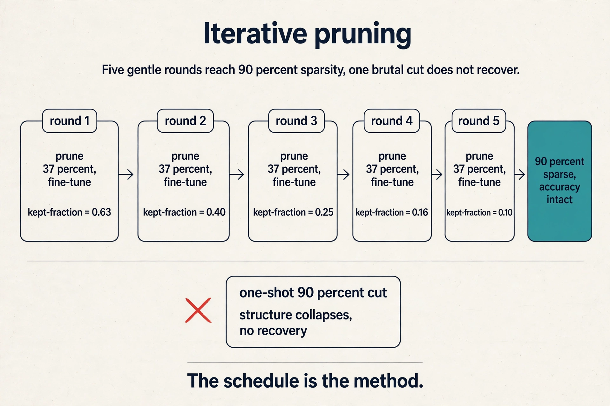
Subchapter: one-shot pruning at LLM scale
At LLM scale, iterative prune-and-fine-tune is too expensive: nobody fine-tunes a 175B model five times to prune it. Two 2023 methods made one-shot pruning work without retraining.
SparseGPT (Frantar and Alistarh, 2023) prunes to 50 percent sparsity in one pass, no retraining. The trick is second-order information: for each weight, it estimates how much the loss would move if that weight vanished, using the inverse Hessian, then picks the removal order that hurts least and compensates the survivors in closed form. 50 percent of a 175B model is 87.5B weights gone, accuracy nearly intact.
Wanda (Sun et al., 2023) is simpler: prune by weight magnitude times input activation norm. A weight matters if it is large and its input fires often. No Hessian, one forward pass of calibration data, and it matches SparseGPT on most models.
The systems catch, stated plainly: neither speeds up dense GEMM (general matrix multiply: one dense matrix-matrix product). The zeros are unstructured, so the hardware still does the full multiply unless a sparse kernel exploits the pattern. One-shot pruning at LLM scale saves memory only with 2:4-structured variants or sparse kernels. Research result, not a serving default.
Where naive pruning breaks: the pattern
Removing weights is not enough. The pattern of what remains decides whether hardware gets faster.
Unstructured (fine-grained) pruning removes individual weights: higher accuracy, but the surviving nonzeros scatter randomly, so you still read and write every memory block to find them. Structured (coarse-grained) pruning removes whole rows, channels, or blocks: lower accuracy, but memory access stays regular and hardware stays fast. Reading random locations is the slowest access pattern on a GPU. Sequential reads are the fastest. Unstructured sparsity pays the random price.
The hardware compromise is 2:4 structured sparsity: in every contiguous group of 4 values, exactly 2 are zero. NVIDIA Ampere’s sparse tensor cores exploit this pattern: regular enough for low metadata overhead, and 50% of weights disappear while accuracy holds.
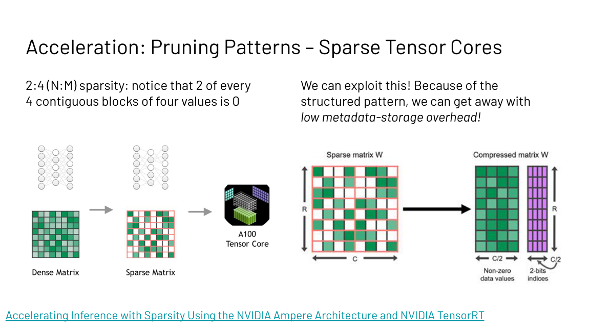
Subchapter: the 2:4 pattern, worked
Four contiguous weights: [a, 0, b, 0]. Store a and b plus 2 bits of metadata saying which two survived. Half the weights are gone. The metadata is 2 bits per group of 4 values, or 0.5 bits per weight: negligible. Ampere’s sparse tensor cores skip the zeros in hardware and run the sparse GEMM at up to 2x the dense throughput.
The constraint is exact: exactly 2 zeros in every group of 4, no exceptions. The pattern is regular enough that the hardware can plan around it. This is the compromise the lecture names: unstructured sparsity is accurate but unusable, structured blocks are usable but coarse, and 2:4 is the point the hardware chose to accelerate.
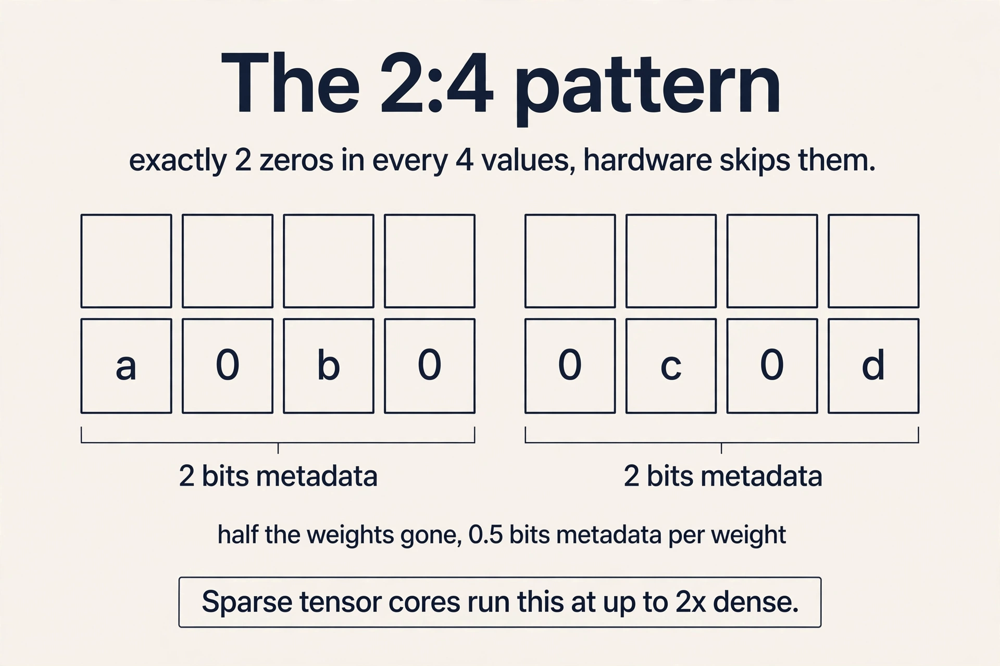
Subchapter: sensitivity analysis, per layer
One global sparsity number is wrong: layers differ, so sensitivity analysis prunes each layer at increasing ratios in magnitude order and measures accuracy. Early layers tend to be sensitive: they build the features everything else uses. Fully connected layers near the output tend not to be: they have redundancy to spare.
The procedure: for each layer, sweep the sparsity ratio from 0 to 90 percent, record the accuracy curve, and pick the ratio where the curve bends. Assign aggressive ratios only where accuracy survives. The interview point: sparsity only speeds up inference if the pattern matches what the hardware accelerates, and the ratio only holds if it is set per layer.
The key question
Pruning removes weights. But the weights that remain are still 32-bit floats. What if the numbers themselves used fewer bits?
How numbers live in bits
The operation is simple. Quantization maps values from a large set to a smaller set. The quantization error is |true value - quantized value|. The economic case is two lines:
Storage = number of parameters x bits per parameter
Add cost: O(N) in bit-width N | Multiply cost: O(N^2)
Halving the bits halves the storage and quarters the multiply cost. Before quantizing, the lecture rebuilds how numbers live in bits, because the bit layout is the thing being changed.
Integers. Unsigned n-bit: 0 to 2^n - 1. Signed: one bit for sign. Two layouts: sign-magnitude (a sign bit plus magnitude) and two’s complement (negation by bit-flip plus one). The slides show -70 as 10111010 in two’s complement against sign-magnitude’s 11000110. Two’s complement wins in hardware: addition needs no special sign logic, and there is one zero instead of two.
Fixed point. A fixed split between integer and fraction bits. The slides’ 8-bit example with 4 fraction bits reads -4.375. Fixed point is cheap: the hardware is integer arithmetic with an implied binary point. The price is range: the split is fixed, so values outside the chosen window clip.
Floating point (IEEE 754). Value = (-1)^sign x (1 + fraction) x 2^(exponent - bias). The exponent buys dynamic range: the gap between the largest and smallest representable values. Bias (127 for FP32’s 8-bit exponent) shifts the exponent range to cover small values.
Worked FP32 example from the slides: exponent bits sum to 120, bias 127, fraction 2^-2 = 0.25. Value = 1.25 x 2^(120-127) = 1.25 x 2^-7 = 0.0097656.
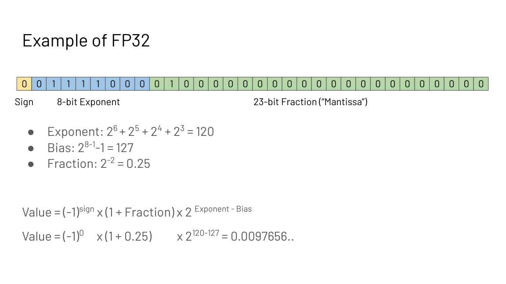
Edge cases: exponent all zeros gives subnormals (value = (-1)^sign x fraction x 2^(1-127)). All-ones exponent with zero fraction is infinity. A nonzero fraction is NaN. You cannot represent infinitely small values: the format has a floor.
FP16 versus BF16. FP16: 5 exponent bits, 10 fraction bits. BF16: 8 exponent bits, 7 fraction bits. BF16 trades precision for dynamic range, which stabilizes training: gradients span many orders of magnitude, and range matters more than fine resolution. This is why BF16 is the default training format.
Subchapter: the bit ladder, 2026 edition
The lecture’s ladder stopped at INT8. Production kept climbing down:
| Format | Bits | Where it lives (Oct 2026) |
|---|---|---|
| FP32 | 32 | master weights, Adam states |
| BF16 | 16 | training default, activations |
| FP8 (E4M3: 4 exponent bits, 3 mantissa bits) | 8 | DeepSeek-V3 native training; Hopper inference |
| INT8 | 8 | LLM.int8() activations; older GPUs |
| FP4/NVFP4 | 4 | Blackwell inference (TensorRT-LLM, vLLM) |
| INT4 (GPTQ/AWQ) | 4 | consumer GPUs, laptops |
| NF4 | 4 | QLoRA frozen base |
| INT2/INT1 | 2/1 | research (quality cliff) |
Each rung halves the memory and moves the quality cliff closer. The lecture’s two classical methods (k-means, linear) sit at the INT8 rung. The rest of this section climbs down the modern rungs.
Second method, part 1: k-means quantization
Han et al., Deep Compression (ICLR 2016 best paper). The inference procedure:
- Cluster the FP32 weight values into S clusters.
- Store per weight a log2(S)-bit cluster index, plus the S FP32 centroids.
- At compute time, reconstruct weights through the index map. Computation stays FP32.
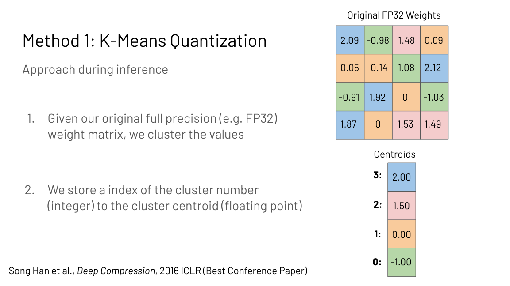
Work the storage. For a D by D FP32 matrix: 32 x D^2 bits originally. After: log2(S) x D^2 index bits + S x 32 centroid bits. At D = 4, S = 4: 64 bytes become 20 bytes, 3.2x compression, and the ratio improves as S stays small relative to D.
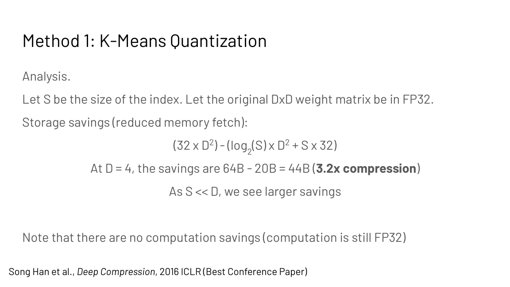
There are no compute savings: the math is still FP32. Fine-tuning trains the shared centroids, not individual weights: dL/dCk sums dL/dWij over all weights assigned to centroid k, then the centroid updates by gradient descent. Huffman coding on the indices exploits nonuniform cluster frequencies for 20%+ further savings on AlexNet’s last layer.
Subchapter: why k-means fits weights
Weight distributions are bell-shaped: most values crowd near zero, few live in the tails. K-means puts more centroids where the values are dense, so the quantization error concentrates where it matters least. Uniform linear quantization (next section) spaces its levels evenly and wastes resolution on empty tail regions. The price of the smarter placement: an index lookup per weight at compute time, and no integer-math speedup.
Second method, part 2: linear quantization
Jacob et al. (2017). Map real values r to integers q with a scale S and zero-point Z:
r = S (q - Z)
Given rmin and rmax from the weight matrix and qmin, qmax from the bit-width (for N bits, -2^(N-1) to 2^(N-1) - 1), solve the two equations rmax = S(qmax - Z) and rmin = S(qmin - Z) for S and Z. The slides’ 2-bit example maps weights like 2.09 to integer 1 with S = 1.07.
Integer-only matmul follows by substitution. With Y = Sy(qY - ZY), W = Sw(qW - Zw), X = Sx(qX - Zx):
qY = (Sw Sx / Sy) (qW - Zw)(qX - Zx) + Zy
All integer math, with one rescale to N bits. Weights and compute are both integer: storage and speed improve together.
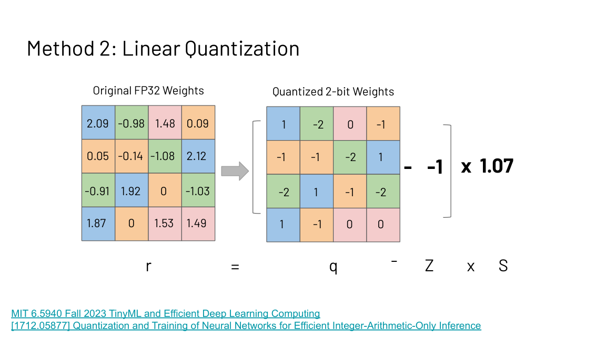
Subchapter: calibration, the PTQ recipe
Post-training quantization needs the ranges rmin and rmax before it can solve for S and Z. Calibration runs a few hundred representative inputs through the model and records the activation ranges. Min-max calibration takes the observed extremes. Percentile calibration (say 99.9%) clips the extremes: one freak activation no longer stretches the whole range and crushes everything else into a few bins.
The decision rule: calibrate on data shaped like production traffic, not random text. A calibration set that never exercises the long-tail activations produces ranges that clip them at serving time. Calibration is where PTQ quality is won or lost, and it costs minutes, not GPU-days.
What breaks at LLM scale
Naive quantization works on small models and breaks past about 6B parameters. The cause: outlier features. A few feature dimensions (about 0.1 percent) develop values tens of times larger than the rest. One scale factor cannot cover both the outliers and the normal values: either the outliers clip or the normal values quantize to noise.
LLM.int8() (Dettmers et al., 2022) splits the problem: compute the 0.1 percent of outlier dimensions in FP16 and quantize the rest to INT8. At dmodel 4096, that is about 4 dimensions in FP16 and 4092 in INT8. The memory savings survive. The accuracy survives.
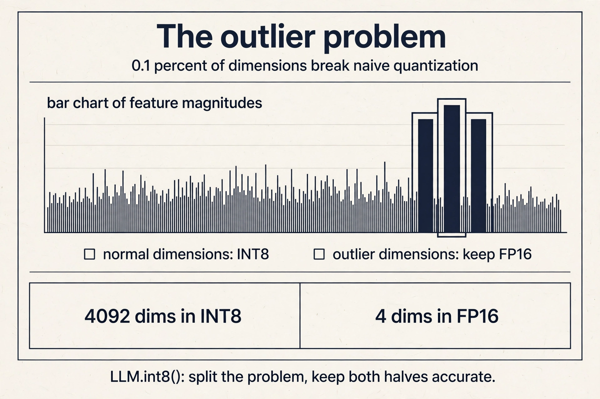
Subchapter: SmoothQuant, move the difficulty
LLM.int8() keeps outliers in high precision. SmoothQuant (Xiao et al., 2022) moves them instead. Activations have outliers. Weights do not. Multiply the activations by a per-channel smoothing factor s and divide the weights by s: the math is unchanged, but the activation outliers shrink and the weights absorb the range they can handle. Now both quantize cleanly to INT8. Same trick as LLM.int8(), opposite direction: instead of splitting the problem, rebalance it.
The LLM quantization family
Three methods dominate LLM deployment as of October 2026, each answering the outlier problem differently.
GPTQ quantizes to 3-4 bits in one shot after training, using second-order (Hessian) information to choose rounding that hurts least. It processes weights column by column, quantizing each and compensating the unquantized remainder in closed form. Fast to apply, no retraining. The 4-bit GPTQ of a 70B model is 35 GB: half the FP16 footprint.
AWQ (activation-aware) protects the weights that matter: it watches which weight channels see large activations, then scales up the 1 percent of salient weights before quantizing, so their rounding error shrinks. Better accuracy than GPTQ at 4 bits on most models. The observation it exploits: not all weights are equal, and the activations say which ones matter.
FP8 skips post-training quantization entirely: train or serve in FP8 from the start. DeepSeek-V3 trained in FP8 natively (E4M3, block-scaled, December 2024): the first frontier model to validate FP8 at 671B scale. The format matches Hopper’s tensor cores, so the math is fast as well as small.
The choice: GPTQ for a quick one-shot shrink, AWQ for the best 4-bit accuracy, FP8 when the hardware and the training stack support it end to end.
Subchapter: NVFP4 and MXFP4, the Blackwell rungs
Blackwell added native 4-bit float tensor cores, and two micro-scaling formats split the rung. NVFP4 is NVIDIA’s format: E2M1 values (1 sign, 2 exponent, 1 mantissa bit), block size 16, E4M3 scales per block. MXFP4 is the OCP (Open Compute Project) standard: E2M1 values, block size 32, E8M0 (8 exponent, 0 mantissa bits) power-of-two scales per block. NVFP4’s smaller blocks and richer scales give finer granularity. MXFP4’s power-of-two scales are cheaper in hardware.
Work the memory. A 70B model in NVFP4: 70B x 0.5 bytes = 35 GB of weights, against 140 GB in FP16. Mistral Large 3 (675B) ships an NVFP4 checkpoint at about 340 GB against 1.35 TB in FP16. The serving stack as of October 2026: TensorRT-LLM 0.17 and higher has the most mature NVFP4 path on B200, NVIDIA ModelOpt runs the PTQ calibration, vLLM serves dense and MoE NVFP4 models on Blackwell, and llm-compressor produces the checkpoints. The decision rule: NVFP4 when you serve on Blackwell and can calibrate well. Pick INT4 GPTQ/AWQ when you serve on older GPUs or consumer cards.
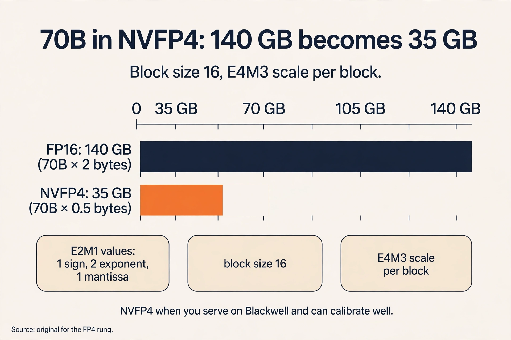
The key question, again
Pruning removes weights. Quantization shrinks the numbers. Both keep the same architecture. What if we change the model itself: keep the knowledge, shrink the network?
Third method: knowledge distillation
Small models are wanted (phones, IoT, laptops) but hard to train: they underfit. Distillation trains a small student against a large teacher that already learned well. The design space aligns student and teacher on: output logits (the model’s raw scores before the softmax, Hinton et al., 2014), intermediate weights, intermediate features, gradients of feature maps, or sparsity patterns.
Logits matching, worked. Teacher says plane 5, car 1: softmax gives 0.982 and 0.017. Student says plane 3, car 2: 0.731 and 0.269. The distillation loss (cross-entropy E(-pt log ps) or L2 on probabilities) pulls the student’s distribution toward the teacher’s. The student learns the teacher’s uncertainty, not just the hard label: that dark knowledge is the point.
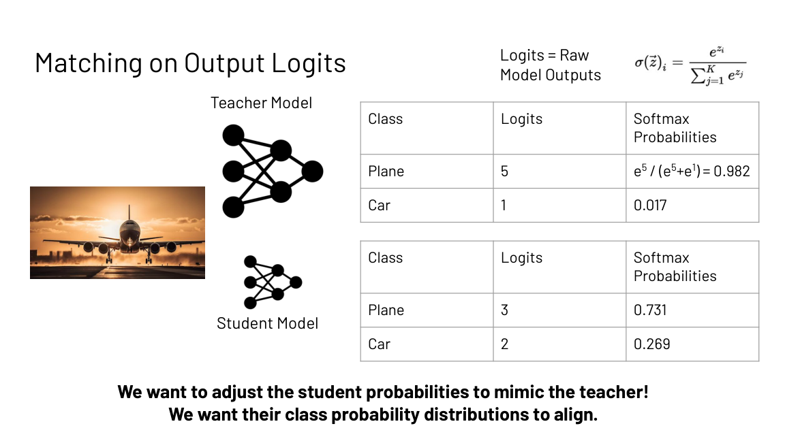
Subchapter: the temperature knob
The lecture’s worked example uses plain softmax. Hinton’s full method adds a temperature T: p_i = exp(z_i / T) / sum(exp(z_j / T)). Higher T softens the distribution and reveals more dark knowledge.
Teacher logits plane 5, car 1. At T = 1: 0.982 and 0.017, nearly a hard label. At T = 5: exp(1) = 2.718, exp(0.2) = 1.221, giving 0.690 and 0.310. The student now sees that the teacher finds the car 31 percent plausible, not 2 percent. Train the student against the softened targets at high T, then run it at T = 1. The temperature is the bandwidth of the knowledge transfer.
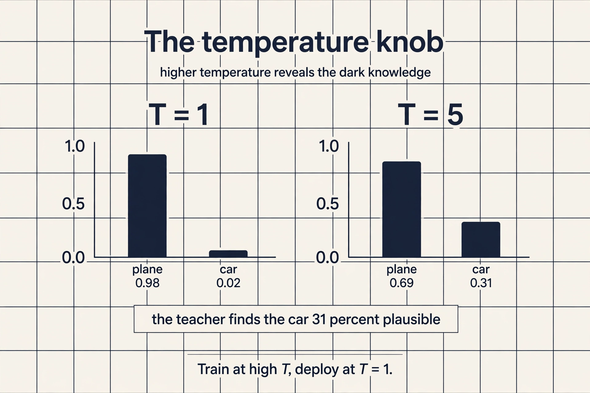
Subchapter: distillation at frontier scale
Distillation grew up. DeepSeek-R1’s reasoning traces were distilled into Qwen2.5 and Llama 3 students (public in the R1 report, January 2025): the students learned chain-of-thought reasoning they could never have found by training on labels alone. Llama 4 Maverick was co-distilled from the unreleased Behemoth teacher. Apple distills large models into on-device models that ship in INT4/INT8 on phones.
The systems reason distillation matters: the teacher runs once, offline, on a cluster. The student runs a billion times on devices. Every unit of teacher quality transferred is inference cost avoided forever. That is why the largest labs distill their best models into their smallest: the economics point one way.
What is used where: real deployments
Shrinking runs production inference. Facts as of October 2026.
| Deployment | Method | Why |
|---|---|---|
| llama.cpp / Ollama | GGUF quants (Q4_K_M and friends) | local inference on laptops |
| vLLM | AWQ, GPTQ, FP8, NVFP4 serving | public; quantized serving at scale |
| SGLang | FP8, NVFP4, FA4 attention backends | public; DeepSeek V3/V4 reference serving |
| TensorRT-LLM 0.17+ | NVFP4 on Blackwell | public; most mature FP4 path |
| NVIDIA ModelOpt | PTQ calibration for FP8/FP4 | public; the calibration pipeline |
| DeepSeek-V3 | native FP8 training (E4M3, block-scaled) | public in the V3 paper |
| DeepSeek-R1 distills | reasoning distilled into Qwen2.5 and Llama 3 | public in the R1 report |
| GPT-OSS 120B | MXFP4-native (117B in about 61 GB) | public; OpenAI’s open model |
| Mistral Large 3 | NVFP4 checkpoint (675B in about 340 GB) | public; Apache 2.0 |
| Apple on-device models | INT4/INT8 quantization | public; phones cannot hold FP16 70B |
| SparseGPT / Wanda | one-shot LLM pruning | public research; rare in production |
Two honest notes. Pruning at LLM scale is mostly research: SparseGPT and Wanda are public papers, but production serving shrinks with quantization, not pruning. And which quant a frontier vendor uses internally (GPT, Gemini) is not public. The table lists what is.
Mapping back: three cuts, one smaller model
| Method | What shrinks | What you keep |
|---|---|---|
| Pruning | Parameter count | Accuracy via iterative retraining and per-layer ratios |
| K-means quantization | Storage bits | Compute in FP32 (no speed gain) |
| Linear quantization | Storage bits and math | Integer arithmetic end to end |
| LLM quants (GPTQ/AWQ/FP8/NVFP4) | Storage bits and math at scale | Accuracy via outlier handling and calibration |
| Distillation | The whole model | The teacher’s knowledge as soft targets |
The Deep Compression results show the combination beats either alone: pruning and quantization compose. For each method, accuracy falls as compression rises. That curve is the price of every cut.
The honest price
Every shrink trades accuracy for memory. Unstructured pruning without hardware support saves nothing at runtime. 2:4 sparsity needs Ampere-or-newer sparse tensor cores and matching kernels. Naive quantization breaks at LLM scale: outlier features past 6B parameters need model-aware fixes like LLM.int8(). Distillation needs a teacher worth imitating and a student architecture that can absorb the lessons. NVFP4 needs Blackwell and good calibration: the format is only as good as the ranges. Butterfly and Monarch matrices are calendar-listed but not in the shipped deck: [uncertain] until checked against the 2024 lecture recording.
Coverage map: every lecture claim and where it lives
| Lecture claim | Covered in | File line |
|---|---|---|
| Shrink memory required, not just accesses; microcontrollers 3x less than phones; ResNet-50 100x over limit | The problem: the model does not fit | L63 |
| Pruning: minimize loss subject to nonzero budget; ideal properties | First method: pruning | L83 |
| Magnitude vs regression pruning; W = [5, 0.3, -0.4] toy | First method: pruning | L83 |
| Iterative prune-and-fine-tune; 37% x 5 rounds to 90% | why iterative beats one-shot | L109 |
| SparseGPT and Wanda one-shot LLM pruning, 50% no retraining (post-deck) | one-shot pruning at LLM scale | L126 |
| Unstructured vs structured; random access slowest; 2:4 Ampere compromise | Where naive pruning breaks: the pattern | L157 |
| 2:4 worked: 2 bits metadata per group, 0.5 bits per weight, 2x sparse GEMM | the 2:4 pattern, worked | L180 |
| Sensitivity analysis: per-layer ratios, early layers fragile | sensitivity analysis, per layer | L198 |
| Quantization definition and error; storage and multiply cost in bit-width | How numbers live in bits | L221 |
| Integers: two’s complement vs sign-magnitude, -70 worked | How numbers live in bits | L221 |
| Fixed point: -4.375 at 4 fraction bits | How numbers live in bits | L221 |
| FP32: (-1)^s(1+f)2^(e-127); 0.0097656 worked; subnormals, inf, NaN | How numbers live in bits | L221 |
| FP16 vs BF16: 8 exponent bits stabilize training | How numbers live in bits | L221 |
| Bit ladder 2026: FP32 to NF4/INT2 (Oct 2026 update) | the bit ladder, 2026 edition | L280 |
| K-means: cluster, log2(S)-bit indices, FP32 centroids; 4x4 toy 64 to 20 bytes | Second method, part 1: k-means quantization | L301 |
| Centroid fine-tuning via dL/dCk; Huffman 20%+ on AlexNet | Second method, part 1: k-means quantization | L301 |
| Why k-means fits weights: bell distribution, dense centroids | why k-means fits weights | L330 |
| Linear: r = S(q-Z); solve from ranges; 2-bit example S=1.07; integer matmul | Second method, part 2: linear quantization | L341 |
| Calibration: min-max vs percentile; production-shaped data | calibration, the PTQ recipe | L370 |
| Outlier features past 6B; LLM.int8() 0.1% in FP16 | What breaks at LLM scale | L388 |
| SmoothQuant: move outliers into weights via per-channel s | SmoothQuant, move the difficulty | L406 |
| GPTQ: Hessian rounding, 3-4 bit one-shot | The LLM quantization family | L418 |
| AWQ: protect 1% salient weights | The LLM quantization family | L418 |
| FP8 native: DeepSeek-V3 E4M3 block-scaled (Oct 2026 update) | The LLM quantization family | L418 |
| NVFP4 vs MXFP4: E2M1, block 16 vs 32; 70B in 35 GB; TRT-LLM/vLLM/ModelOpt (Oct 2026) | NVFP4 and MXFP4, the Blackwell rungs | L450 |
| Distillation: student vs teacher; logits matching 0.982/0.017 vs 0.731/0.269 | Third method: knowledge distillation | L483 |
| Temperature: T=1 vs T=5, 0.69/0.31 dark knowledge | the temperature knob | L504 |
| R1 distills into Qwen2.5/Llama 3; Llama 4 from Behemoth; Apple on-device (Oct 2026) | distillation at frontier scale | L521 |
| Deployments table: llama.cpp, vLLM, SGLang, TRT-LLM, ModelOpt, V3, R1, GPT-OSS, Mistral, Apple (Oct 2026) | What is used where | L539 |
| Three cuts mapped to what shrinks and what is kept | Mapping back | L565 |
| Honest price: every cut trades accuracy; NVFP4 needs Blackwell; Butterfly/Monarch [uncertain] | The honest price | L580 |
Because the surviving weights scatter randomly across memory. The hardware still reads and writes every block to find the nonzeros, so the memory traffic barely drops. Structured patterns like 2:4 N:M keep accesses regular, which is what sparse tensor cores need. Accuracy favors fine-grained. Speed favors structured. Sensitivity analysis: prune each layer at increasing ratios in magnitude order and measure accuracy. Layers have different sensitivity, with early layers usually more fragile. Assign aggressive ratios only where accuracy survives.
Original: 32 bits x 16 weights = 64 bytes. After: each weight stores a 2-bit cluster index (log2 4), so 16 x 2 bits = 4 bytes, plus 4 FP32 centroids = 16 bytes. Total 20 bytes. Saving: 64 - 20 = 44 bytes, 3.2x compression. Compute is unchanged because weights reconstruct to FP32 before the matmul. When you also want faster math. K-means only shrinks storage. The compute stays floating point. Linear quantization maps values to integers with a scale and zero-point, so the matmul itself runs in integer arithmetic.
Sign bit 0, exponent bits summing to 120, fraction 2^-2 = 0.25. Value = (-1)^0 x (1 + 0.25) x 2^(120-127) = 1.25 x 2^-7 = 0.0097656. The 8 exponent bits with bias 127 buy the dynamic range. The 23 fraction bits buy the precision. BF16 keeps 8 exponent bits like FP32 and cuts the fraction to 7, trading precision for dynamic range. Gradients span many orders of magnitude during training, so range matters more than fine resolution. FP16’s 5 exponent bits overflow and underflow more easily.
The teacher’s uncertainty, not just its labels. Matching the full probability distribution (0.982/0.017 versus 0.731/0.269 in the worked example) teaches the student which confusions are reasonable. The distillation loss, cross-entropy E(-pt log ps) or L2 on probabilities, pulls the student’s distribution toward the teacher’s. Small models underfit: they cannot find the good solutions on their own from hard labels. The teacher’s soft targets carry far more information per example about the function’s shape, which is what makes the small model trainable.
Toy: X = [x1, x2, x3], W = [5, 0.3, -0.4], Y = ReLU(5 x1 + 0.3 x2 - 0.4 x3). Magnitude pruning looks only at |W|: 5 stays, 0.3 and -0.4 go. It never asks what the weights do. Regression pruning (He et al., 2017) asks what the layer output does: pick rows to minimize ||Z - Zhat||_F^2, the reconstruction error of the layer output, subject to the nonzero budget. A small weight that the output depends on survives. A large weight the output ignores does not. Then relearn the remaining weights. Magnitude is a weight statistic. Regression is an output statistic. The output statistic wins. Because each cut destroys co-adapted structure. Pruning 37 percent and fine-tuning lets the survivors re-learn their roles. Repeating five times reaches 90 percent sparsity with accuracy intact. One 90 percent cut removes too much structure at once and fine-tuning cannot recover. The schedule is the method.
It controls how much dark knowledge the teacher reveals. With logits plane 5, car 1: at T = 1 the targets are 0.982 and 0.017, nearly a hard label. At T = 5 they are 0.690 and 0.310: the student learns the teacher finds the car 31 percent plausible. Higher temperature means softer targets and more information per example about the decision boundary. Train at high T, deploy at T = 1. Yes. As T grows, the distribution flattens toward uniform and the teacher’s ranking information washes out. The temperature is tuned, not maximized: enough softness to reveal confusions, not so much that everything looks equally plausible.
Outlier features: about 0.1 percent of dimensions develop values tens of times larger than the rest, so one scale factor cannot cover both the outliers and the normal values. LLM.int8() splits the problem: compute the outlier dimensions in FP16 and quantize the rest to INT8. SmoothQuant rebalances it: scale activations down and weights up by a per-channel factor so both quantize cleanly to INT8. Split the problem or move the difficulty. Both keep the accuracy that naive quantization loses. GPTQ uses second-order information to pick the rounding order that hurts least, quantizing column by column with closed-form compensation: a better rounding strategy. AWQ uses the activations to find the 1 percent of salient weights and scales them up before quantizing so their error shrinks: a better protection strategy. GPTQ is the quick one-shot shrink. AWQ usually wins at 4 bits.
The weights in FP16 are 140 GB: they do not fit, so quantization is mandatory. INT4 (GPTQ or AWQ) brings weights to 35 GB, leaving 45 GB for the KV cache and activations. On Blackwell, NVFP4 also gives 35 GB with native tensor-core speed. Check the cache budget: at 0.5 MB per token (GQA 70B), 45 GB holds 90k tokens of context. If the workload needs longer context, the choices are a smaller model, a bigger GPU, or offloading. Pruning does not help here: it saves parameters, not the serving path, and 2:4 needs kernel support. Distillation changes the model: a distilled 8B in FP16 is 16 GB and fits trivially, but it is a different model with different quality. INT8 weights are 70 GB: they fit, but leave only 10 GB for cache and activations, capping context at about 20k tokens. INT4 doubles the headroom. The cost is accuracy: 4-bit needs AWQ or GPTQ done well, and some tasks degrade. The design answer names the tradeoff: context length and quality, priced in bits per weight.
Recap: the whole lesson on one screen
The story in nine steps. Each step answers the one before it.
- The model does not fit. Microcontrollers have 3x less memory than phones. ResNet-50 exceeds their limit by up to 100x. Shrink the memory required, not just the accesses.
- Pruning removes weights. Minimize loss subject to a nonzero budget. Magnitude keeps large weights (W = [5, 0.3, -0.4] keeps 5). Regression picks rows by reconstruction error. Iterative beats one-shot. At LLM scale, SparseGPT and Wanda prune 50% in one pass, but unstructured zeros need sparse kernels to matter.
- Patterns decide sparsity value. Unstructured pruning is accurate but scatters memory access. 2:4 structured sparsity matches Ampere tensor cores: 50% fewer weights, real speedup. Set ratios per layer by sensitivity analysis.
- Numbers live in bits. Integers, fixed point, FP32: (-1)^s (1+f) 2^(e-127). The worked value is 0.0097656. BF16 trades precision for range and trains stably.
- K-means shrinks storage, not compute. Cluster weights, store log2(S)-bit indices plus centroids. 4x4 FP32 with 4 clusters: 64 to 20 bytes, 3.2x. Math stays FP32.
- Linear quantization runs integer math. r = S(q - Z). Solve S, Z from the ranges. The matmul becomes qY = (SwSx/Sy)(qW-Zw)(qX-Zx) + Zy: all integer. Calibrate the ranges on production-shaped data.
- Outliers break naive quants at scale. 0.1% of dimensions run tens of times hot. LLM.int8() splits them into FP16. SmoothQuant rebalances them into the weights. GPTQ rounds smart. AWQ protects the salient 1%. NVFP4/MXFP4 take 4-bit to Blackwell: 70B in 35 GB.
- Distillation teaches uncertainty. The student matches the teacher’s probability distribution, not just labels. Temperature sets the bandwidth. Frontier labs distill their best into their smallest: the teacher runs once, the student runs a billion times.
- Cuts compose. Accuracy pays. Pruning plus quantization beats either alone. Every method trades a little accuracy for a lot of memory.
Go deeper
- Quantization Explained: reducing LLM size without losing accuracy: https://www.youtube.com/watch?v=1JWnEze9V5g
- LLM quantization methods compared (GGUF, GPTQ, AWQ): https://www.youtube.com/watch?v=WmvZwR4rKJg
- Deep Compression (Han et al., ICLR 2016): https://arxiv.org/abs/1510.00149
- Quantization and Training of Neural Networks (Jacob et al.): https://arxiv.org/abs/1712.05877
- LLM.int8(): 8-bit Matrix Multiplication for Transformers at Scale: https://arxiv.org/abs/2208.07339
- GPTQ: Accurate Post-Training Quantization: https://arxiv.org/abs/2210.1730
- AWQ: Activation-aware Weight Quantization: https://arxiv.org/abs/2306.00978
- Distilling the Knowledge in a Neural Network (Hinton et al.): https://arxiv.org/abs/1503.02531
Official sources and further reading
Official: - Memory-Efficient Neural Networks slide deck (Fall 2023 headers). - MIT 6.5940 TinyML (Song Han): the lecture’s stated inspiration.
Further reading: - Han et al., “Deep Compression” (ICLR 2016): k-means plus pruning plus Huffman. - Jacob et al., “Quantization and Training of Neural Networks for Efficient Integer-Arithmetic-Only Inference” (2017). - Dettmers et al., “LLM.int8()” (2022): what breaks at LLM scale and the outlier fix. - Frantar et al., “GPTQ” (2023): one-shot 4-bit with second-order rounding. - Lin et al., “AWQ” (2023): activation-aware 4-bit. - Xiao et al., “SmoothQuant” (2022): the deck’s motivating LLM quantization figure.
Caveats from these sources. The deck’s quantization examples are small-matrix illustrations. LLM-scale behavior adds outlier features that break naive schemes (see LLM.int8()). The 2:4 sparsity speedup needs Ampere-or-newer sparse tensor cores and matching kernels. Unstructured sparsity rarely speeds up dense GEMM. Butterfly and Monarch matrices are calendar-listed but not in the shipped deck: [uncertain].
Connections to the other courses
- CS336 L02: the precision ladder (FP32 to FP4) and what each format costs.
- CS229S L04: quantization shrinks the weights that memory-bound decoding re-reads.
- CS229S L08: LoRA as an alternative to full fine-tuning memory cost.
- CS229S L01: the memory wall: why shrinking matters at all.
- CS229 L15: quantization for serving (INT8, FP8, GPTQ, AWQ) from the serving side.
Sources
- SLIDESMemory-Efficient Neural Networks slide deck (Fall 2023 headers)
- PAPERHan et al., Learning both Weights and Connections for Efficient Neural Networks (2015)
- PAPERHan et al., Deep Compression (ICLR 2016)
- PAPERJacob et al., Quantization and Training of Neural Networks for Efficient Integer-Arithmetic-Only Inference (2017)
- PAPERHinton et al., Distilling the Knowledge in a Neural Network (2014)
- PAPERDettmers et al., LLM.int8(): 8-bit Matrix Multiplication for Transformers at Scale (2022)
- PAPERFrantar et al., GPTQ: Accurate Post-Training Quantization for Generative Pre-trained Transformers (2023)
- PAPERLin et al., AWQ: Activation-aware Weight Quantization for LLM Compression and Acceleration (2023)
- SUPPLEMENTMIT 6.5940 TinyML and Efficient Deep Learning Computing (Prof. Song Han)